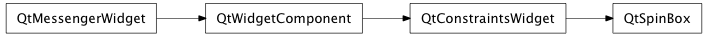

Bases: enaml.widgets.constraints_widget.ConstraintsWidget
A spin box widget which manipulates integer values.
The minimum value for the spin box. Defaults to 0.
The maximum value for the spin box. Defaults to 100.
The current integer value for the spin box, constrained to minimum <= value <= maximum.
An optional prefix to include in the displayed text.
An optional suffix to include in the displayed text.
Optional text to display when the spin box is at its minimum. This allows the developer to indicate to the user a special significance to the minimum value e.g. “Auto”
The step size for the spin box. Defaults to 1.
Whether or not the spin box is read-only. If True, the user will not be able to edit the values in the spin box, but they will still be able to copy the text to the clipboard.
Whether or not the spin box will wrap around at its extremes. Defaults to False.
How strongly a component hugs it’s contents’ width. SpinBoxes ignore the width hug by default, so they expand freely in width.
A method called after initialization which allows the widget to bind any event handlers necessary.
alias of __NoInterface__

Bases: enaml.qt.qt_constraints_widget.QtConstraintsWidget
A Qt implementation of an Enaml SpinBox.
Handler for the ‘set_special_value_text’ action from the Enaml widget.
Handler for the ‘set_single_step’ action from the Enaml widget.
Handler for the ‘set_read_only’ action from the Enaml widget.